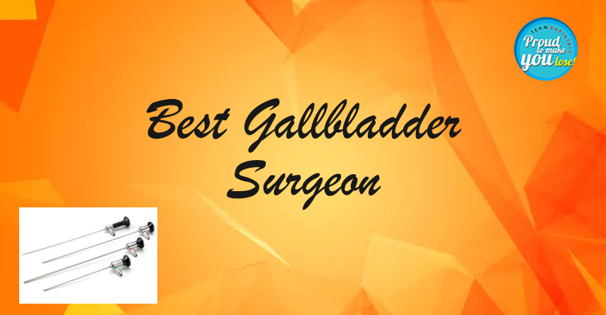

Is it Necessary to Treat Gall Bladder Stones by Surgery?
General Health July 02, 2020 Dr. Atul Peters

Understanding Gall Bladder Stones: Symptoms, Treatment, and Benefits of Laparoscopic Surgery
Understanding the Gall Bladder Stones
Gall Bladder is a small pear-shaped organ situated just below the liver in the abdomen. The main function of Gall Bladder is to store and concentrate bile which is produced in the Liver. Only a part of the bile that is produced in the Liver goes to Gall Bladder where it concentrates. Rest all of the bile passes directly into small intestines. Sometimes this Gall Bladder becomes mal-functional leading to stone formation. While some people have only a single stone, others can have multiple stones. Many times these stones don’t cause problems. In a few patients, these stones can cause infection and inflammation in the Gall Bladder. This leads to pain with fever and jaundice if these stones slip into the bile ducts and block the flow of bile. Abdominal ultrasound is the best investigation to confirm this.
Treatment and Procedure
Once the diagnosis is confirmed upon ultrasound, the only and best treatment option is to remove this Gall Bladder by surgery.
The Gall Bladder surgery is done by Laparoscopy which is the key-hole technique. Open surgical procedure is almost abandoned.
This surgery is performed through three to four small holes. In uncomplicated cases, there are no stitches or bandages. Mostly, the patient can walk around and drink liquids in 3 hours and go home within 24 hours of the surgery. He or she might resume office in 3 to 4 days.
Expert Surgeons and Benefits
The best Gall Bladder Surgeon in Delhi takes only 15 min to 30 min to complete the procedure in uncomplicated cases. Short anaesthesia, quick recovery, and minimal pain lead to early recovery.
Gall bladder surgery in Delhi is being performed in almost all of the hospitals. The advantage of getting it done at Smart Cliniqs is the availability of experienced Gall Bladder surgeons who have performed collectively around 20000 laparoscopic Gall Bladder surgeries with minimal complication rates. According to Dr. Atul NC Peters, Director, Minimal Access, Metabolic and Bariatric Surgery, Max-Smart Super-Specialty Hospital, Saket, Laparoscopic Gall Bladder Surgery should be performed timely in patients who had episodes of pain due to infection in Gall Bladder to avoid further complications. Large stones in Gall Bladder have been linked to cancers of the Gall Bladder if they are left untreated for long.
Risks and Advancements
Smaller stones are even more dangerous as they tend to slip into the bile ducts and cause jaundice and life-threatening pancreatitis.
With more and more advances in Laparoscopic imaging and instruments, Gall Bladder Surgery in Delhi is becoming safer day by day.
Back to Blog
EMERGENCY
24/7